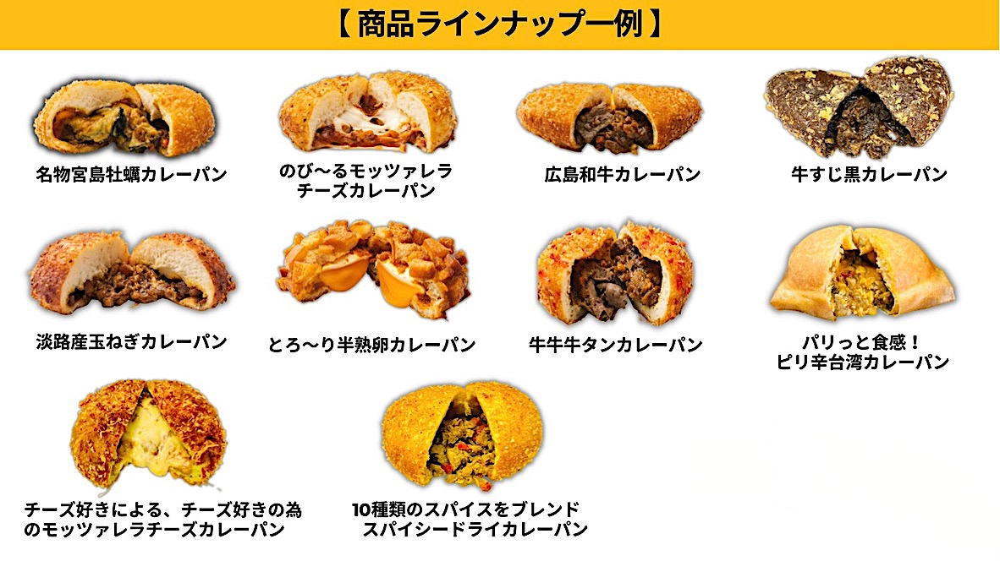
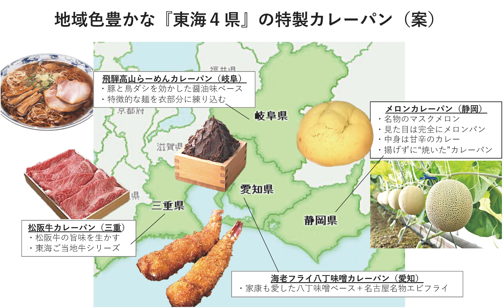

カレーパン
商品開発への思い
東海地方には、長年に渡って育まれてきた食材・食文化があります。
それらは地域にとって大切な財産であり、人々の誇りでもあり、
そしていまや、地域を潤す重要な観光資源でもあります。
いいものを作るだけでは売れない時代。
PRに多額のコストをかけられない時代。
市場のニーズやトレンドをとらえ、⼯夫を凝らした商品が、
消費者の⼼に残る“地域の顔”となって伝えたい思いや情報も届けてくれます。
持続的な収益をもたらしながら、地域の魅⼒をアピールしてくれる商品に。
⽣まれ育った⼈も、暮らす⼈も、訪れた⼈も、これから訪れる⼈も。
東海地⽅にゆかりのある⼈々が、アイデンティティーを感じられる商品に。
⽣産・製造・企画・PR・販売のプロが１つのチームとなり、開発に取り組みます。

カレーパンは、私たちの⽣活に⻑らく定着している“スタンダード”な⾷品。
ブーム到来の好影響を受けつつ、ブームが去っても流⾏に左右されない強みがあります。
広島の観光地・宮島では、広島県産の牡蠣が⼊った「名物宮島牡蠣カレーパン」を開発。
１⽇で2,500個を販売する⼈気ぶりで、地元の新たな名物となりました。
ご当地⾷材・⾷⽂化の味と情報を盛り込る企画商品で、ヒットする可能性を秘めているカレーパン。
そのポテンシャルの⾼さが作り⼿と買い⼿、双⽅向の注⽬を集めるワケと⾔えるでしょう。

主な３つの販売方法
- ①工場で既に揚げられた状態のパンを冷凍で納品。販売前日に冷凍解凍し、常温販売
- ②①のパンを電子レンジ１分＋トースター１分で温めて販売（※使用する食材による）
- ③揚げていないパンを冷凍で納品。冷蔵解凍後に発酵器で発酵させ、フライヤーで揚げて販売